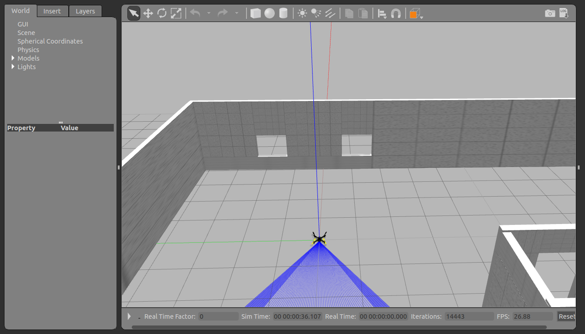
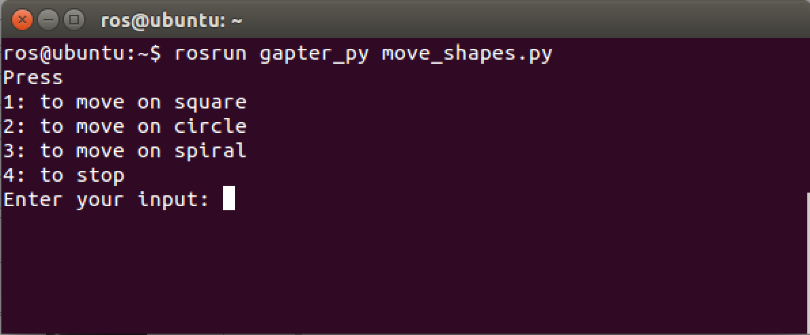

GAPTER: Moving in Shapes¶
First launch the simulation, see following links for further details:
TO BE PROVIDED

{kind=link}
Figure 1: Launch the simulator
After launching the simulator, Take off the drone:
# in the MAVProxy prompt:
mode GUIDED
arm throttle
takeoff 2

Figure 2: Drone taking off
Then, in new terminal, launch the ROS node:
rosrun gapter_py move_shapes.py

{kind=link}
Figure 3: Moving in shapes
Code Explanation¶
The source code could be found in github_link.
To move the drone, a TwistStamped message with appropriate velocities must sent to the /mavros/setpoint_velocity/cmd_vel topic.
moveSquare() is used to allow the drone to move on square, we just specify the side length.
def moveSquare():
square_pub = rospy.Publisher('/mavros/setpoint_velocity/cmd_vel', TwistStamped, queue_size=10)
square = TwistStamped()
user_input = raw_input("Enter the length of th square side: "); # input from user
side_length = float(user_input)
flag_x = 1
flag_y = 1
for x in range(2,6):
if 4%x == 0:
square.twist.linear.x = side_length
flag_x= -1
else:
square.twist.linear.y = side_length
flag_y= -1
square_pub.publish(square)
rospy.sleep(5)
square.twist.linear.x=0;
square.twist.linear.y=0;
square_pub.publish(square);
rospy.sleep(2);
if flag_x == -1 and flag_y == -1:
side_length *= -1
flag_x = 1
flag_y = 1
To move on circle:
def moveCircle():
circle_pub = rospy.Publisher('/mavros/setpoint_velocity/cmd_vel', TwistStamped, queue_size=10)
circle = TwistStamped()
circle.twist.linear.x=0.5
circle.twist.linear.z=0.5
circle_pub.publish(circle)